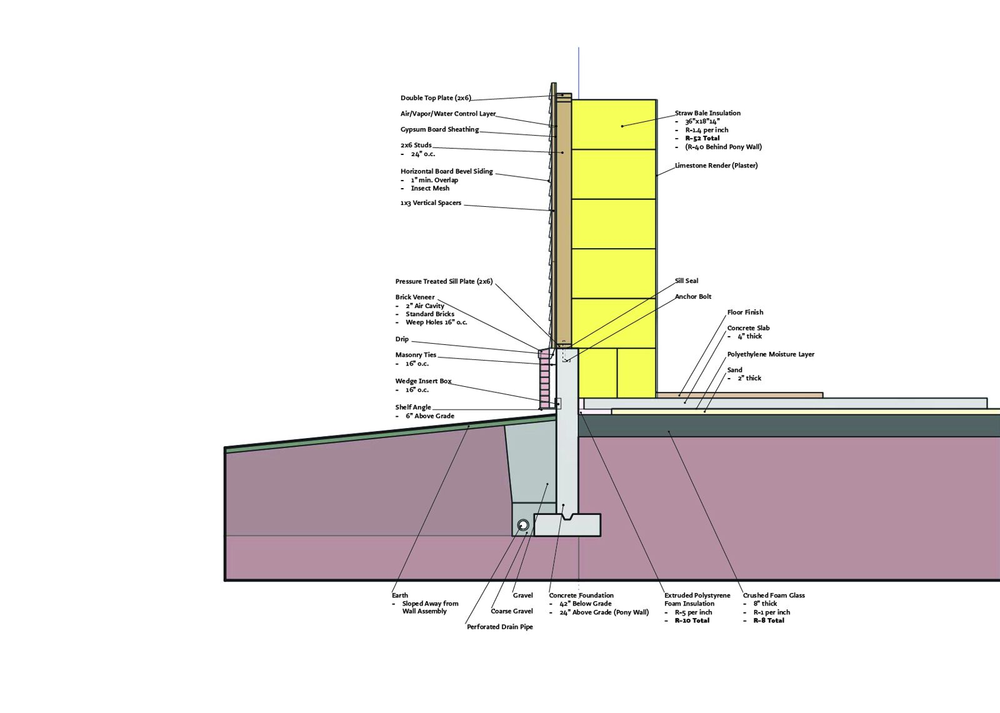

The drawing sheet needs WebGL, so this is the Document. Plain page
FAA 330 · University of Illinois Urbana-Champaign · 2025
3 Little Pigs Wall Assembly
A straw-bale wall assembly that ordinary builders can put up: conventional stick framing, R-52 insulation.
Champaign-Urbana · The house that stays up
The fields run flat to every horizon, and Champaign sits in the middle of them.
From Ethan’s records: Winters here get cold enough that a wall has to earn its keep.This mark means the line comes straight from Ethan’s own records, not from the storytelling.
From Ethan’s records: Winters here get cold enough that a wall has to earn its keep.This mark means the line comes straight from Ethan’s own records, not from the storytelling.
Ethan stops the car at the edge of town, in front of a house built of straw, sticks and brick, all at once.
At the edge of town stands a house built of straw, sticks and brick, all at once.
You knock. Nothing falls down.
You knock. Nothing falls down.
The door opens, and a hand comes out to shake yours. “Ethan.”
From Ethan’s records: Inside the walls: stick framing and straw bales, with brick on the outside.
From Ethan’s records: Inside the walls: stick framing and straw bales, with brick on the outside.
It is January, and the living room is warm.
It is January, and the living room is warm.
From Ethan’s records: The straw comes out at R-52.
From Ethan’s records: The straw comes out at R-52.
The wolf is going to need a better plan.
The wolf is going to need a better plan.
The story
Ever wonder why the three little pigs didn't just work together? Me too.
This wall uses all three pigs' materials: straw bale insulation, stick framing, and a brick veneer. It combines what each pig got right. Its traditional stick framing fits the way contractors already build, and its straw bale insulation reaches R-52. That means healthy, thermally comfortable rooms and big energy savings.
The project explores natural materials and what their properties can do. The point is that a natural material only spreads if it plugs into construction methods people already use.
What I did
- Researched the materials and designed the full assembly, from foundation to finish
- Drew the annotated axonometric and section in Rhino and composited them in Photoshop
Process
- Layers include a masonry water table, a stick frame and straw bale insulation (worksheet row 4)
- The drawing documents the insulation math: straw bales at 36 × 18 × 14 in and R-1.4 per inch, giving R-52 through the wall and R-40 behind the pony wall
- Designed for Champaign, Illinois (climate zone 5), with platform framing and either brick veneer or horizontal board siding
- Below grade: crushed foam glass under the slab (R-8) and extruded polystyrene at the foundation (R-10)
Outcome
- Annotated axonometric and section drawings, 8.5 × 11 in
- Straw-bale insulation value of R-52 (as documented)
Reflection
I want my work to bring joy and to be fun. Nobody thinks of play when they think of wall sections. But choosing straw bales as insulation reminded me of the children's story and made me smile, so I decided to build with all three pigs' materials.
Drawings


Ethan Shig Anderson · Contact
Cutaway axonometric · 3 Little Pigs Wall Assembly · 2025
Cutaway axonometric of a wall corner, peeled back layer by layer from brick veneer and board siding through yellow straw bale insulation to the stud frame, slab and concrete foundation, with every layer labeled.
Model · 3 Little Pigs Wall Assembly · 2025
Wall section · 3 Little Pigs Wall Assembly · 2025
Wall section from the foundation footing up to the double top plate: a thick yellow band of straw bale insulation sits on a concrete pony wall, with labeled layers on both sides.
Axon 1 · 3 Little Pigs Wall Assembly · 2025
Section A · 3 Little Pigs Wall Assembly · 2025
Axon 2 · 3 Little Pigs Wall Assembly · 2025
Axon 3 · 3 Little Pigs Wall Assembly · 2025
Axon 4 · 3 Little Pigs Wall Assembly · 2025